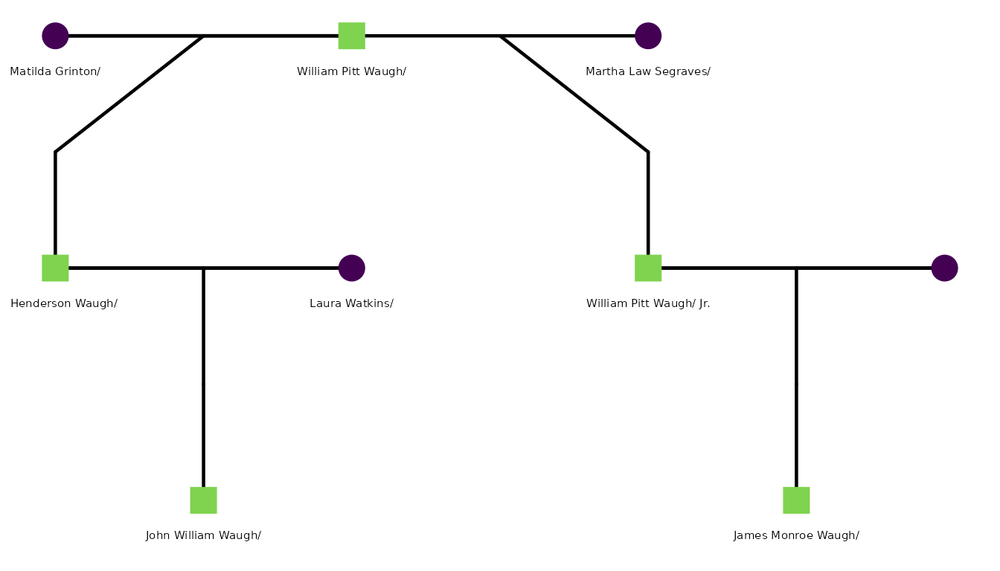

This genetic genealogy project is a collaboration between two Wake Forest psychology faculty – SMG and CEW. SMG is a behavioral geneticist with expertise in pedigree analysis and statistical genetics. CEW is a social psychologist with expertise in the self-regulation of emotion. CEW is a direct descendant of W. Henderson Waugh, the focal individual in the family tree, and is interested in understanding his paternal ancestry. SMG is interested in applying her expertise in pedigree analysis to a real-world case study, and developing tools that can be used by other researchers in the field of genetic genealogy. The project is motivated by a desire to understand the historical context of the Waugh family tree, as well as to explore the potential for genetic genealogy to shed light on questions of ancestry and relatedness. The project is also motivated by a desire to contribute to the development of tools and methods for working with genealogical data.
Readers who want the historical context behind this pedigree should start with Griffin (2017), a county-level history of slavery in Wilkes County, North Carolina, which is the setting for every event described below. For a portrait of one of the family’s twentieth-century descendants, see the retrospective of the artist Wilton Waugh “Bud” Mitchell (b. 1934) in The Wilkes Record (The Legacy of “Bud” Mitchell, n.d.).
History
The core research question is one of paternity. William Pitt Waugh (b. 28 April 1775, Adams County, Pennsylvania; d. 14 August 1852, Wilkes County, North Carolina) was a bachelor slaveholder. Historical records show he placed a “Runaway/Fugitive Enslaved Person” notice in the Alexandria Gazette on 21 March 1820. His last will and testament, filed in Wilkes County, names no lawful wife.
Evidence in the tree points to two sons born to two different women of color — both outside of marriage:
- W. Henderson Waugh (b. approximately 1835, Wilkes County NC), son of Matilda Grinton. The 1860 census lists Matilda’s occupation as “House Woman.” W. Henderson married Laura Watkins on 24 June 1877 and is the direct paternal ancestor of the focal individual.
- William Pitt Waugh Jr. (b. 1844, Wilkes County NC), born as William Segraves, son of Martha Law Segraves. His birth note reads: “Born out of wedlock to Martha Law Segraves. Uses her surname until 1865. Purported Natural son of William P Waugh (1775–1852).” He served in the Civil War as “William Segraves, Company E, First Regiment Middle Tennessee Infantry,” then took the Waugh name after the war. He was explicitly excluded from William Pitt Waugh’s will: “he did not make any bequest to his purported natural son by Martha Laws, William Segraves.”
W. Henderson Waugh and William Pitt Waugh Jr. are, if the documentary evidence is correct, paternal half-brothers — both sons of William Pitt Waugh Sr. by different mothers. The question is whether their shared Y chromosome can be confirmed through genetic genealogy.
The paternal chain from the focal individual back through history is:
| Generation | Individual | Birth |
|---|---|---|
| Self | Christian Emil WAUGH | 29 Apr 1978, Monterey County CA |
| Father | REDACTED | 1950s |
| Grandfather | REDACTED | 1930s |
| Great-grandfather | John William “Bud” Waugh | abt Jun 1880, NC |
| 2nd great-grandfather | W. Henderson Waugh | abt 1835, NC |
| 3rd great-grandfather | William Pitt Waugh Sr. | 28 Apr 1775, Adams County PA |
Because W. Henderson Waugh’s paternity rests on historical record rather than DNA, a Y-chromosome match with a living male descendant of William Pitt Waugh Jr. (the Segraves line) would strongly corroborate that William Pitt Waugh Sr. fathered both half-brothers. Furthermore, the presence of a Y-chromosome match with a living male line descent of a brother of William Pitt Waugh Sr. would also support the paternal link between W. Henderson Waugh and William Pitt Waugh Sr., as well as the broader family tree.
Working with a real GEDCOM file
To apply this workflow to a real Ancestry.com export:
# Unzip the Ancestry export
unzip("W. Henderson Waugh Family Tree.zip", overwrite = TRUE)
# Peek at the raw file to orient yourself before parsing
raw_ged <- readLines("W. Henderson Waugh Family Tree.ged")
head(raw_ged, 15)
# Locate the anchor individual by name
line_num <- which(grepl("1 NAME W. Henderson /Waugh/", raw_ged, fixed = TRUE))
raw_ged[line_num:(line_num + 20)]
# Parse all INDI blocks
ped <- readGedcom("W. Henderson Waugh Family Tree.ged",
remove_empty_cols = TRUE, verbose = FALSE
)
# Add year columns robust to approximate dates
ped$birth_year <- extractGedcomYear(ped$birth_date)
ped$death_year <- extractGedcomYear(ped$death_date)
# Quick overview
summarizeGedcom(ped)
# Parse family/marriage records
fam <- readGedcomFamilies("W. Henderson Waugh Family Tree.ged", verbose = FALSE)Note that Ancestry.com regenerates person IDs each time you export, so ID values will differ between exports. Always locate individuals by name or birth date rather than by a hardcoded ID.
Analyzing the pedigree with BGmisc
Once the data is in a tidy data frame, the BGmisc
package (Garrison et al.
2024) provides the next layer of analysis: computing pairwise
relatedness, tracing paternal lineages, and identifying Y-chromosome
carriers.
The strategy for the Waugh paternity question is:
- Identify the focal individual and trace his Y-chromosome line back to William Pitt Waugh Sr.
- Flag all individuals descended from William Pitt Waugh Sr. who are not in W. Henderson Waugh’s branch — these are descendants of William Pitt Waugh Jr. (the Segraves line).
- Among those, find living males: they carry the same Y chromosome as William Pitt Waugh Sr. and are potential DNA match candidates.
- A Y-chromosome match between a living Segraves-line male and the focal individual (or his close Y-line relatives) would strongly confirm that W. Henderson Waugh and William Pitt Waugh Jr. share the same father.
Alas, that analysis is beyond the scope of this vignette, but the following code demonstrates how to structure the pedigree and flag Y-line membership.
library(BGmisc)
#>
#> Attaching package: 'BGmisc'
#> The following objects are masked from 'package:tidygedcom':
#>
#> buildTreeGrid, getWikiTreeSummary, readGed, readgedcom, readGedcom,
#> readWikifamilytree, royal92, traceTreePaths
library(ggpedigree)
sample_ged <- c(
"0 HEAD",
"1 GEDC",
"2 VERS 5.5.1",
"1 CHAR UTF-8",
# William Pitt Waugh Sr. — the common paternal ancestor
"0 @I1@ INDI",
"1 NAME William Pitt /Waugh/",
"1 SEX M",
"1 BIRT",
"2 DATE 28 APR 1775",
"2 PLAC Adams County, Pennsylvania, USA",
"1 DEAT",
"2 DATE 14 AUG 1852",
"2 PLAC Wilkes County, North Carolina, USA",
"1 FAMS @F1@",
"1 FAMS @F2@",
# Matilda Grinton — mother of W. Henderson Waugh
"0 @I2@ INDI",
"1 NAME Matilda /Grinton/",
"1 SEX F",
"1 BIRT",
"2 DATE ABT 1797",
"2 PLAC North Carolina, USA",
"1 FAMS @F1@",
# W. Henderson Waugh — 2nd great-grandfather of focal person
"0 @I3@ INDI",
"1 NAME W. Henderson /Waugh/",
"1 SEX M",
"1 BIRT",
"2 DATE ABT 1835",
"2 PLAC Wilkes County, North Carolina, USA",
"1 FAMC @F1@",
"1 FAMS @F3@",
# Martha Law Segraves — mother of William Pitt Waugh Jr.
"0 @I4@ INDI",
"1 NAME Martha Law /Segraves/",
"1 SEX F",
"1 BIRT",
"2 DATE OCT 1814",
"1 FAMS @F2@",
# William Pitt Waugh Jr. (born William Segraves) — paternal half-brother of W. Henderson
"0 @I5@ INDI",
"1 NAME William Pitt /Waugh/ Jr.",
"1 SEX M",
"1 BIRT",
"2 DATE 1844",
"2 PLAC Wilkes County, North Carolina, USA",
"1 DEAT",
"2 DATE FEB 1880",
"1 FAMC @F2@",
"1 FAMS @F4@",
# Laura Watkins — wife of W. Henderson Waugh
"0 @I6@ INDI",
"1 NAME Laura /Watkins/",
"1 SEX F",
"1 BIRT",
"2 DATE ABT 1846",
"2 PLAC North Carolina, USA",
"1 FAMS @F3@",
# John William (Bud) Waugh — son of W. Henderson; great-grandfather of focal person
"0 @I7@ INDI",
"1 NAME John William /Waugh/",
"1 SEX M",
"1 BIRT",
"2 DATE ABT JUN 1880",
"2 PLAC North Carolina, USA",
"1 FAMC @F3@",
# James Monroe Waugh — son of William Pitt Jr.; Y-DNA candidate branch
"0 @I8@ INDI",
"1 NAME James Monroe /Waugh/",
"1 SEX M",
"1 BIRT",
"2 DATE 10 NOV 1867",
"1 DEAT",
"2 DATE 23 JUL 1937",
"1 FAMC @F4@",
# Family 1: William Pitt Sr. + Matilda Grinton -> W. Henderson Waugh
"0 @F1@ FAM",
"1 HUSB @I1@",
"1 WIFE @I2@",
"1 CHIL @I3@",
# Family 2: William Pitt Sr. + Martha Segraves -> William Pitt Jr.
# _SREL friend marks this as a non-marital relationship in Ancestry exports
"0 @F2@ FAM",
"1 HUSB @I1@",
"1 WIFE @I4@",
"1 CHIL @I5@",
"1 _SREL friend",
# Family 3: W. Henderson Waugh + Laura Watkins
"0 @F3@ FAM",
"1 HUSB @I3@",
"1 WIFE @I6@",
"1 CHIL @I7@",
"1 MARR",
"2 DATE 24 JUN 1877",
"2 PLAC Wilkes County, North Carolina, USA",
# Family 4: William Pitt Jr. + wife
"0 @F4@ FAM",
"1 HUSB @I5@",
"1 CHIL @I8@",
"0 TRLR"
)
tmp_ged <- tempfile(fileext = ".ged")
writeLines(sample_ged, tmp_ged)
ped <- readGedcom(tmp_ged, verbose = FALSE)
# Convert IDs to numeric (required by BGmisc)
ped_num <- ped
ped_num$personID <- as.numeric(ped_num$personID)
ped_num$momID <- as.numeric(ped_num$momID)
ped_num$dadID <- as.numeric(ped_num$dadID)
# Structure pedigree into family units and compute paternal line IDs
ged_ped <- ped2fam(ped_num, personID = "personID") |>
ped2paternal(personID = "personID", momID = "momID", dadID = "dadID")
# Identify John William "Bud" Waugh as the focal person's great-grandfather
# (the deepest ancestor in our sample with a known paternal chain)
focal_ID <- ged_ped$personID[grepl("John William", ged_ped$name)]
y_line_ID <- ged_ped$patID[ged_ped$personID == focal_ID]
# Flag Y-line membership — green branch = focal person's line
ged_ped$y_line <- ifelse(ged_ped$patID == y_line_ID, "Y Line", "Other Lines")
ggpedigree(
ged_ped,
personID = "personID",
momID = "momID",
dadID = "dadID",
sexVar = "sex",
config = list(
label_include = TRUE,
label_column = "name",
label_text_size = 2,
code_male = "M",
code_female = "F",
segment_lineage_include = TRUE,
segment_lineage_focal_personID = focal_ID,
segment_lineage_component = "paternal",
segment_lineage_legend_title = "Patriline",
add_phantoms = TRUE,
founder_order_seed = 1L
)
)
#> Warning in buildPlotConfig(default_config = default_config, config = config, :
#> The following config values are not recognized by getDefaultPlotConfig():
#> segment_lineage_include, segment_lineage_focal_personID,
#> segment_lineage_component, segment_lineage_legend_title, founder_order_seed
#> REPAIR IN EARLY ALPHA
The plot shows both branches descending from William Pitt Waugh Sr.: the green (focal) line through W. Henderson Waugh on the left, and the Segraves branch through William Pitt Waugh Jr. on the right. These are distinct people with distinct IDs — the shared surname is what makes the tree appear circular at first glance, but there is no loop.
In the full Waugh analysis, addPaternalChain() and
addPaternalLineFlag() from BGmisc extend this
further by flagging descendants of specific ancestors. The key variable
is:
in_granddad_henderson_line_not_dad_henderson_line =
in_granddad_henderson_line & !in_dad_henderson_lineThis isolates individuals descended from William Pitt Waugh Sr. but
not through W. Henderson Waugh — i.e., the Segraves
(William Pitt Jr.) branch — who are the primary Y-DNA match candidates.
ggPedigreeInteractive() from ggpedigree (Garrison 2026)
renders the full tree with nodes colored by additive genetic relatedness
to the focal individual and edges highlighted by patriline
membership.
Summary of functions
| Function | Purpose |
|---|---|
readGedcom(file) |
Parse INDI blocks → one row per person |
readGedcomFamilies(file) |
Parse FAM blocks → one row per family |
summarizeGedcom(df) |
Coverage counts and percentages |
extractGedcomYear(x) |
Year from any GEDCOM date string |
convertGedcomCoords(df) |
Convert _lat/_long columns to decimal
degrees |
gedcomLat2Numeric(x) |
Convert a latitude string vector |
gedcomLon2Numeric(x) |
Convert a longitude string vector |
A note on primary sources
The primary records referred to above – the Alexandria
Gazette runaway notice of 21 March 1820, the Wilkes County will and
estate papers of William Pitt Waugh (probated 22 July 1852), Tennessee
death records, and United States federal census returns for 1830 through
1930 – are carried as SOUR citations inside the GEDCOM file
itself rather than restated here.